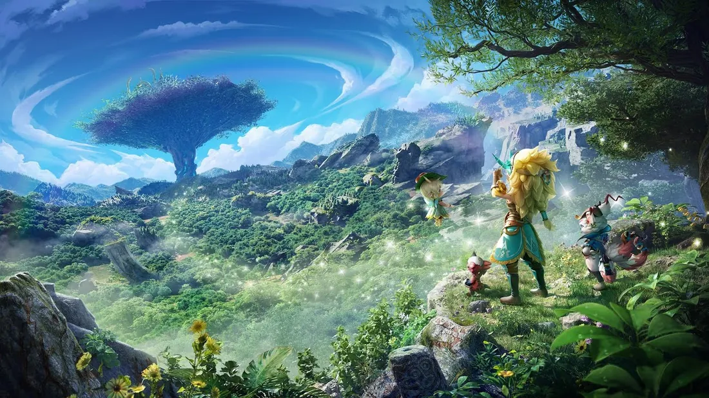
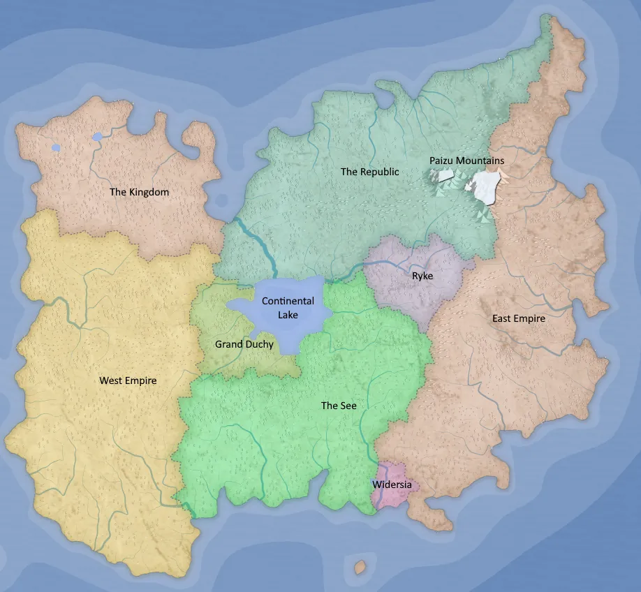
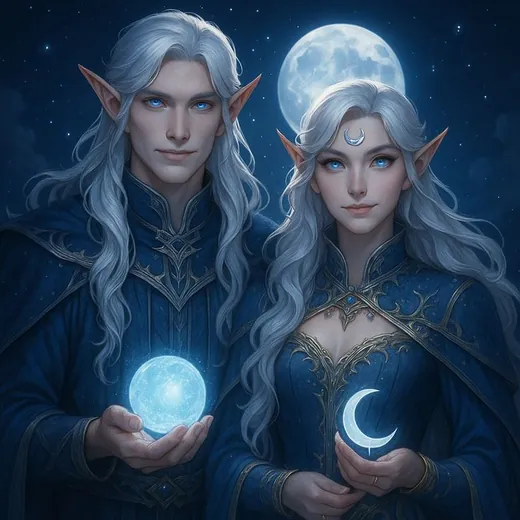
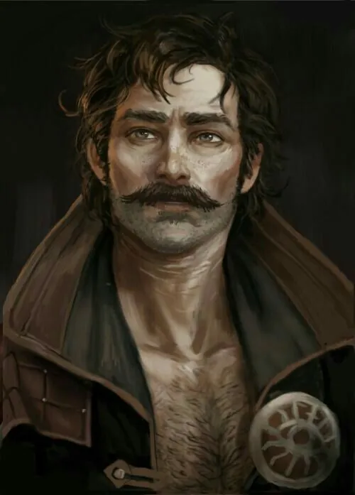

"You have another life ahead of you. Decide what you wish to understand first."
Build your character, learn what already exists in the world, or browse the bodies and bloodlines your new life might take. More systems will appear here as the Isekai Hell compendium grows.

Rules Training
A 10–15 minute interactive orientation with [god] covering racial trees, skills, abilities, actions, cooldowns, and basic RP adjudication. Progress is not saved.
Begin Training ›
World Lore
Meet [god], learn why this world is trapped in stasis, review its recent history, then explore the nations of the Second Continent.
Enter World ›
Race Compendium
Learn the Prime, Beast, Fae, Construct, Monster and Hybrid paths, then browse the known races and their world-standard requirements.
Browse Races ›
Character Creation
Spend your starting points, choose your origin and race, assemble skills, equipment and abilities, then export a clean character sheet.
Enter Builder ›The gateway is designed to expand without crowding the existing sections. Factions, gods, bestiary, items, materials and other compendium modules can join this screen later.